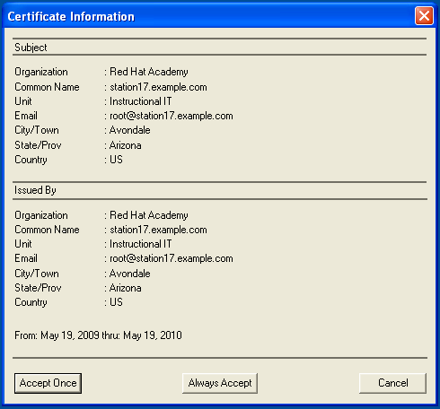

Joey's Notes: VSFTP FTP server on RHEL 5.x
By Joey Prestia
FTP
File Transfer Protocol (FTP) utilizes Transmission Connection Protocol (TCP) communication and listens on port 21 for incoming client connections by default. The connection to this port from the FTP client will form the control stream from which commands are passed from the FTP client to the FTP server and on occasion from the FTP server to the FTP client. FTP uses a separate connection for control and data. So for the actual file transfer to take place, a different connection is required which is called the data stream. Depending on the transfer mode, the process of setting up the data stream is different. Port 21 for control, port 20 for data.
The original FTP specification is an inherently unsecure method of transferring files because there is no method specified for transferring data in an encrypted fashion. This means that under most network configurations, user names, passwords, FTP commands and transferred files can be captured by anyone on the same network using a packet sniffer. The common solution to this problem is to use either SFTP (SSH File Transfer Protocol), or FTPS (FTP over SSL), which adds SSL or TLS encryption to FTP as specified in RFC 4217.
VSFTP
Very Secure File Transfer Protocol Daemon (VSFTPD) is an FTP server for UNIX-like systems, including Linux. VSFTPD is a highly scalable and very configurable FTP server. The VSFTPD server is the default FTP application for RHEL 5.X. Many web hosting companies’ permit FTP because it a good mechanism to distribute files that are too large or impractical to distribute by other means such as e-mail. This makes VSFTP skills attractive if you are a systems administrator.
Files involved
The files involved with vsftpd are located in /etc/vsftpd and are: ftpusers, user_list, vsftpd.conf, and vsftpd_conf_migrate.sh. We will cover all of these briefly except vsftpd_conf_migrate.sh which is just a migration script for old installations of vsftpd.
Let us examine each file keeping in mind that depending on the options you select in the vsftpd.conf you may additionally need to create or modify a file that the directive needs to read for the option to work correctly.
/etc/vsftpd/ftpusers
The text file ftpusers contains a list of users that may not log in using the File Transfer Protocol (FTP) server daemon. This file is used not merely for system administration purposes but for improving security within a TCP/IP networked environment. It will typically contain a list of the users that either have no business using ftp or have too many privileges to be allowed to log in through the FTP server daemon. Such users usually include root, daemon, bin, uucp, and news.
# Users that are not allowed to login via ftp root bin daemon adm lp sync shutdown halt mail news uucp operator games nobody
/etc/vsftpd/user_list
The user_list file is one of those files that is acted upon differently depending on the invocation of a boolean directive in the vsftpd.conf file. If userlist_deny=NO in the vsftpd.conf file then it will only allow users in this file. If it is equal to YES which is the default, then the users in this file are not allowed to login via FTP and no password will be prompted for.
# vsftpd userlist # If userlist_deny=NO, only allow users in this file # If userlist_deny=YES (default), never allow users in this file, and # do not even prompt for a password. # Note that the default vsftpd pam config also checks /etc/vsftpd/ftpusers # for users that are denied. root bin daemon adm lp sync shutdown halt mail news uucp operator games nobody
/etc/vsftpd/vsftpd.conf
This is the main configuration file for this daemon. It has a good amount of directives in it and adequate comments that explain them in sufficient detail. Although not all possible directives are listed in this file. The complete list is at http://vsftpd. beasts.org/vsftpd_conf.html.
Anonymous FTP configuration
To configure an anonymous FTP server for simple file distribution is a simple task. The copy of vsftpd that is packed with RHEL 5.X comes ready to run in this manner right out of the box. With one exception the vfstpd.conf file suggest that you use a unprivileged user for vsftpd. This is the name of the user that is used by vsftpd when it wants to be totally unprivileged. Note that this should be a dedicated user, rather than nobody. You want to use an unpriviledged user so that, if compromised, nothing can be done through that user to your server. The user nobody tends to be used for rather a lot of important things on most machines and that is what it defaults to.
(always make a backup first cp /etc/vsftpd/vsftpd.conf /etc/vsftpd/vsftpd.conf.orig)
# It is recommended that you define on your system a unique user which the # ftp server can use as a totally isolated and unprivileged user. # 5-14-09 Joey I edited below to allow vsftpd to use user ftpsecure with no privileges #nopriv_user=ftpsecure nopriv_user=ftpsecure
The server is then started with the following command:
[root@station17 ~]# service vsftpd start
This will also create the /var/ftp and /var/ftp/pub directories. Once this is done you can start serving files via ftp. Simply place the files into the /var/ftp/pub directory and they will be available. This is one method that can be used to distribute files and is fine for a local area network that is behind a firewall. Other options exist and may be preferable depending of you need. You will be able to have users anonymously connect and download files. They will not be able to upload unless you configure the sever to allow for this and set a writable directory.
SSL Connections
If you are allowing local users to login via ftp then you may want to seriously consider using ssl for the simple reason that this will encrypt the password so it will not be sent over the wire in plain text. Below I will show one way to configure this.
First we would generate the certificate which will require you to answer some questions.
[root@station17 ~]# openssl req -x509 -nodes -days 365 -newkey rsa:1024 -keyout /etc/pki/tls/certs/vsftpd.pem -out /etc/pki/tls/certs/vsftpd.pem
Once the certificate is generated we would need to add the following lines to the vsftpd.conf file to force users trying to connect to use ssl and therefore encrypt the sending of the password.
ssl_enable=YES ssl_tlsv1=YES force_local_logins_ssl=YES rsa_cert_file=/etc/pki/tls/certs/vsftpd.pem
Having made the changes you would need to restart the daemon and test it by using a FTP client that supports connecting via ssl such as Coreftp http://www.coreftp.com.
Chrooting Users
It is a common practice to force local users into a chroot home directory that are using the server to post web content. The way to do this is by locating the following section and adding the line chroot_local_user=YES if you notice the line is in the comments but not located at the beginning of the line like the rest of the commented out directives.
# You may specify an explicit list of local users to chroot() to their home # directory. If chroot_local_user is YES, then this list becomes a list of # users to NOT chroot(). # 5-14-09 Joey I added the following line to chroot users on the system to their # home directories that are using ftp clients to upload web files. chroot_local_user=YES #chroot_list_enable=YES # (default follows) #chroot_list_file=/etc/vsftpd/chroot_list #
Changing the Anonymous Root Directory
Perhaps you have a non-standard directory with the files you want to distribute located in it. The anon_root directive allows you to set the root directory to whatever you want. Simply add this directive and your chosen path as I have shown below and restart vsftpd.
anon_root=/powervault/distros
Hiding Files
This option can be used to set a pattern for filenames (and directory names etc.) which should be hidden from directory listings. Despite being hidden, the files / directories etc. are fully accessible to clients who know what names to actually use. Items will be hidden if their names contain the string given by hide_file, or if they match the regular expression specified by hide_file. Note that vsftpd's regular expression matching code is a simple implementation which is a subset of full regular expression functionality. Example: hide_file={*.mp3,.hidden,hide*,h?}
hide_file={hidden,hide,private}
Using a Banner
There are two methods of using a banner with vsftpd. The first is commented out and suitable for one liners in the vsftpd.conf file where you can just specify the string right there after the directive. Simply uncomment it and change it, then restart vsftpd.
# # You may fully customize the login banner string: #ftpd_banner=Welcome to blah FTP service. #
This is the one that is preferable to use if you need to specify a large amount of text to display the appropriate warning message.
This option is the name of a file containing text to display when someone connects to the server. If set, it overrides the banner string provided by the ftpd_banner option.
banner_file=/etc/vsftpd/vsftpd_banner
Conclusion
There are a great deal of options available to further configure the vsftpd server. The man page vsftpd.conf(5) has a a listing of them all. Be aware that you can use TCP wrappers with vsftpd to protect the service in conjunction with any other security you may already have in place. Although being insecure it can be adapted to be run in a relatively secure fashion. Always make sure you take the necessary time to secure it and throughly test your security.
Resources
- http://vsftpd.beasts.org
- Sobell, Mark G. A Practical Guide to Red Hat(R) Linux(R) Fedora(TM) Core and Red Hat Enterprise Linux (3rd Edition). Upper Saddle River: Prentice Hall PTR, 2006.
Talkback: Discuss this article with The Answer Gang
![[BIO]](../gx/authors/prestia.jpg)
Joey was born in Phoenix and started programming at the age fourteen on a Timex Sinclair 1000. He was driven by hopes he might be able to do something with this early model computer. He soon became proficient in the BASIC and Assembly programming languages. Joey became a programmer in 1990 and added COBOL, Fortran, and Pascal to his repertoire of programming languages. Since then has become obsessed with just about every aspect of computer science. He became enlightened and discovered RedHat Linux in 2002 when someone gave him RedHat version six. This started off a new passion centered around Linux. Currently Joey is completing his degree in Linux Networking and working on campus for the college's RedHat Academy in Arizona. He is also on the staff of the Linux Gazette as the Mirror Coordinator.